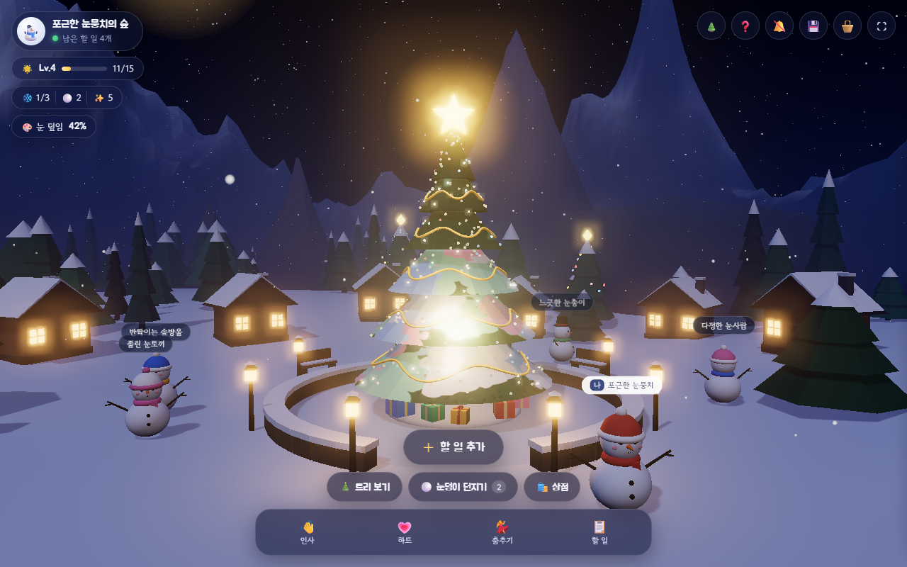
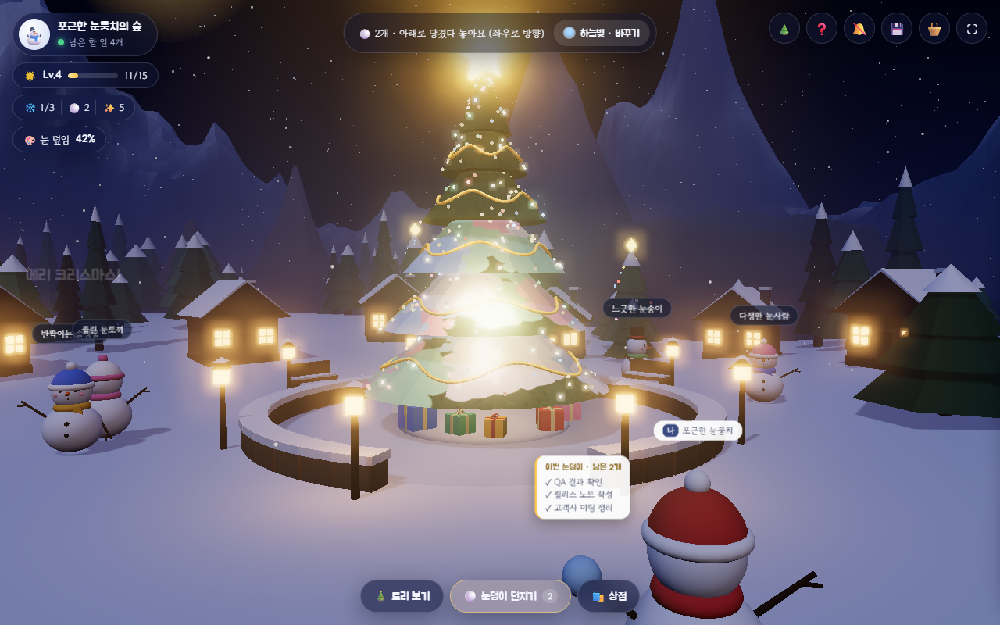
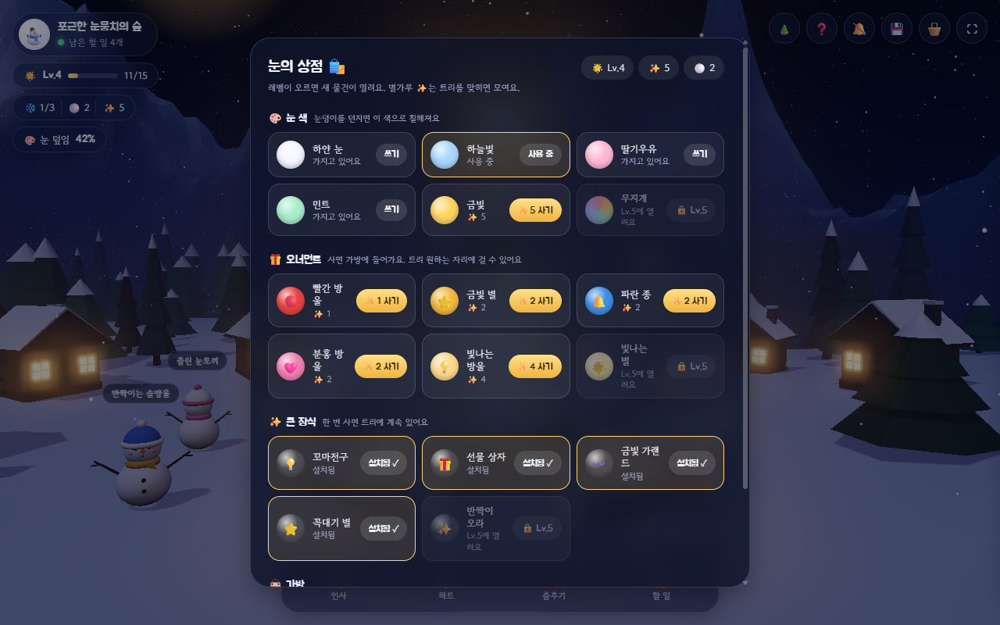

할 일을 끝낼수록
트리가 화려해져요
처음엔 칙칙한 맨 트리. 할 일을 하나씩 끝내면 눈이 쌓이고, 눈덩이를 던져 트리를 칠하고, 장식으로 꾸며요. 동료와 같은 숲에서 함께할 수도 있어요.
내 컴퓨터에 설치해서 써요. 로그인이나 회원가입은 필요 없어요.

이렇게 놀아요
링크 하나 던지듯 할 일을 담고, 끝내고, 던지고, 꾸미면 돼요.
링크를 던지듯 할 일 담기
Slack 스레드, Jira 이슈, 문서 링크를 복사해서 앱에 붙여넣기만 하면 할 일이 돼요.
- 한 줄에 하나씩 적은 긴 목록도 알아서 나눠 담아요
- 링크 아래 긴 설명은 카드 메모로 저장돼요
- 다른 프로그램에서 복사하고 Ctrl+Alt+T 를 누르면 바로 담겨요
끝내면 눈이 쌓여요
할 일 1개를 끝내면 눈송이 ❄️ 하나. 3개가 모이면 눈덩이 ⚪ 하나가 돼요.
눈덩이를 뒤로 당겼다 놓아 트리에 던져요. 맞은 자리가 눈으로 칠해지고 별가루 ✨ 를 받아요.

별가루로 트리 꾸미기
레벨이 오를수록 새 물건이 열려요. 눈 색, 직접 거는 오너먼트, 꼬마전구와 가랜드 같은 큰 장식까지.

동료와 한 숲에서
초대 코드 하나로 같은 숲에 모여요. 광장에 서로의 눈사람이 나타나고, 사람마다 자기 집이 생겨요.
켜 둔 사람의 창문엔 불이 켜져요
눈사람을 눌러 보내요
레벨·끝낸 개수·눈 덮임만 공유
설치 방법
1분이면 끝나요. 인증서가 없는 앱이라 처음 한 번만 경고가 나와요.
🪟 윈도우
- 위에서 윈도우용 받기를 눌러 설치 파일(.exe)을 내려받아요
- 파일을 더블클릭해요
- "Windows의 PC 보호" 창이 뜨면 추가 정보 → 실행
🍎 맥
- 내 맥에 맞는 파일(.dmg)을 내려받아요. 2020년 말 이후 모델은 애플 칩, 그 전은 인텔이에요 (왼쪽 위 → 이 Mac에 관하여)
- 파일을 열고 앱을 Applications 폴더로 끌어다 놓아요
- 처음엔 앱을 우클릭 → 열기 → 열기
🎫 Jira 연결 (선택)
- 앱에서 오른쪽 위 🧺 → Jira 로그인
- 회사 Jira 주소를 넣고 로그인
- 평소처럼 회사 계정으로 로그인하면, 나에게 배정된 이슈가 자동으로 담겨요
자주 묻는 질문
궁금한 점을 모아 뒀어요.
내 할 일은 어디에 저장돼요?
내 컴퓨터에만 저장돼요. 서버에 올라가지 않아요. 다른 컴퓨터로 옮기려면 앱 오른쪽 위 💾 에서 내보내기와 가져오기를 쓰면 돼요.
동료에게 내 할 일 제목이 보이나요?
아니요. 친구 숲에는 이름표, 색, 레벨, 끝낸 개수, 눈 덮임만 공유돼요. 할 일 제목, 링크, 메모는 어디에도 올라가지 않아요.
Jira 로그인은 안전한가요?
앱 안에서 평소처럼 로그인하는 방식이에요. 비밀번호나 API 토큰을 따로 저장하지 않고, 이슈는 읽기만 해요. 앱 안의 로그아웃 버튼으로 언제든 끊을 수 있어요.
창을 닫으면 앱이 꺼지나요?
트레이(맥은 메뉴바)에 계속 남아 있어서, 링크를 복사하고 Ctrl+Alt+T (맥: ⌘+Option+T) 를 누르면 언제든 담을 수 있어요. 완전히 끄려면 트레이 아이콘에서 종료를 눌러요.
배경화면으로도 쓸 수 있나요?
설치 폴더의 wallpaper.html 을 Lively Wallpaper 같은 프로그램에 추가하면 바탕화면에 트리가 깔려요.